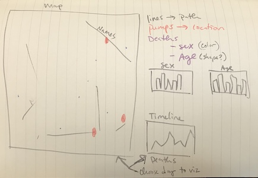
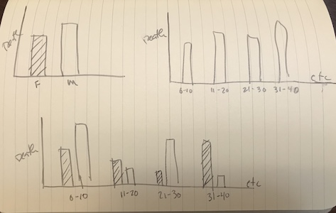
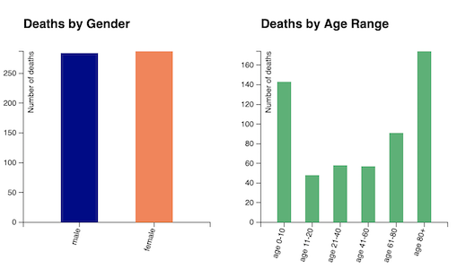
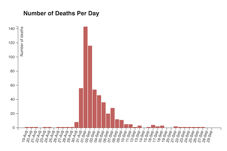

Documentation
This visualization of John Snow's Cholera Map was done by Whitney Walker for the IUPUI INFO H-517 Fall 2019 course.
Navigate back to the visualization
Design Process
I first started with sketches to get an idea of how I wanted to lay out the different components. The map was the first graphic that I determined details — it was the central component of this visualization and needed to work well for the rest of the visualization to be effective. Next, I experimented with different ways to represent the secondary graphics (and variables). It took a few different iterations, and in the end I tried to keep the variables clear and separate so they can be explored independently.


Rationale for Design Choice
Layout
- I ensured all of the components are clustered so viewers can easily see how variables individually and collectively influence the map without having to move around or scroll on the screen.
Map Visualization
- The map was drawn with a light grey, moderate weight path stroke. This ensures the streets are easily viewable but don't obstruct the rest of of the map or data.
- The deaths are represented with small circles. I chose color-blind friendly colors so viewers can immediately see the distribution of gender upon the screen. Blue and coral-pink are encoded with gender connotations, making it easier for viewers to quickly associate which color means which gender. The circle size is large enough to be noticeable but small enough that they don't obstruct one another. I added outlines and opacity to make it easier to see overlapping circles.
- The pumps are represented with larger circles that have a significantly different color from the deaths. The larger size pulls attention in a different way from the deaths, and the light blue color is encoded with meaning, intuitively representing a blue water-like color.
-
The street labels are a darker color and weight than the rest of the map, making it easier to notice them. The small font size keeps them from overpowering the map. The notable landmarks are spacilly noted by light great boxes, labeled with a subtle but clear label.
Graphs
- For the selective graphs, I chose bar charts because they are easy to see and compare, making interpreting and selecting values easy. I avoided stacked bar charts and pie charts because they make it harder to compare the size of values. I also wanted to keep the variables separate so I could easily isolate and compare each variable's effects.
- The graphs had different colors to indicate that different variables are represented — and to make ties with the gender colors on the map.
- I wanted to make it clear that the graphs are interactive, so I made the graphs show interactivity by becoming less opaque upon hover. Upon click, bars become black, indicating they have been selected. I kept this selection color consistent so viewers can see across graphs which data are selected.
Discovery
Because we already were able to see the original John Snow map, I already had a sense of where the deaths were concentrated. What I wanted to see is if there were any other interesting relationships between the data.
- The first discovery was seeing that the gender distribution of deaths was almost equal.
- Next, I wanted to see if there were relationships between age and deaths. Unsurprisingly, the young and old were most susceptable and had the highest number of deaths.
- I also noticed that there was a heavy concentration of deaths at the beginning of September. This makes me wonder what things may have happened around this time. What other situational or time-sensitive information might exist? Did events happen around this time?


References
-
https://wesbos.com/arrow-functions/
-
https://www.d3-graph-gallery.com/graph/interactivity_tooltip.html
-
https://developer.mozilla.org/en-US/docs/Web/CSS/transform-function/translate
-
https://developer.mozilla.org/en-US/docs/Web/CSS/transform
-
https://www.oreilly.com/library/view/interactive-data-visualization/9781449340223/
-
http://bl.ocks.org/d3noob/8952219
-
https://www.w3schools.com/colors/colors_names.asp
-
https://www.data-to-viz.com/caveat/pie.html
-
https://www.dashingd3js.com/svg-paths-and-d3js
-
https://coderwall.com/p/psogia/simplest-way-to-add-zoom-pan-on-d3-js